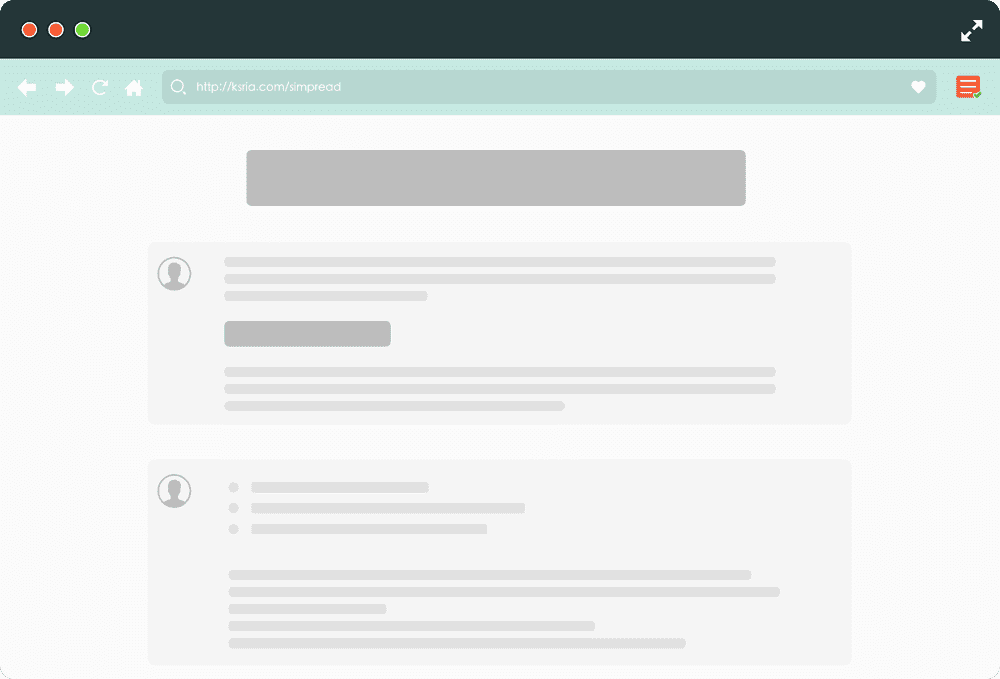

聚焦模式
不改变当前页面的结构，仅仅高亮需要阅读的部分
适合临时阅读 或者 未适配阅读模式 的网站

多种主题模式
白练 白磁 卯之花色 丁子色 娟鼠 月白 百合 紺鼠 黒鸢
更符合 中文阅读 习惯的设置，包括：字间距 行间距 等 以及 灵活的自定义 CSS ，详细请看 自定义样式
定制化，可编程
有不想显示的图片？没问题！页面任意元素，均可隐藏，可编程，支持：
HTML 节点 jQuery 语句 正则表达式 任意段落 详细请看 站点编辑器


论坛类页面 · 分页
支持 论坛类页面，更完美的展示 知乎 贴吧 等论坛类页面
支持 分页功能，在阅读模式下可翻页，再也不退出阅读模式了

支持生产力工具，总有一款适合你